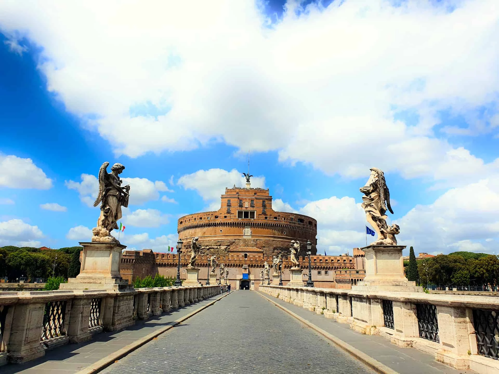

<header>
    <div class="top_menu" *ngIf="isOnline; else offLine">
        <div class="logo">
            
        </div>
        <nav>
            <li>
                <ul><a routerLink="">Home</a></ul>
                <ul><a href="">Chi siamo</a></ul>
                <ul><a href="">Dove siamo</a></ul>
                <ul><a href="">I nostri gelati</a></ul>
                <ul><a href="">Le torte</a></ul>
                <ul><a href="">Pasticceria</a></ul>
                <ul><a href="">Contatti</a></ul>
                <ul><a routerLink="dashboard">Dashboard</a></ul>
            </li>
        </nav>
        <div class="burger">
            <i class="fa-solid fa-ellipsis"></i>
        </div>
    </div>

    <ng-template #offLine>
        <div class="logo">
            
        </div>
        <div class="pre_top_menu2"></div>
        <div class="top_menu2">
            
            <nav>
                <li>
                    <ul><a routerLink="">Home</a></ul>
                    <ul><a routerLink="chi_siamo">Chi siamo</a></ul>
                    <ul><a href="dove_siamo">Dove siamo</a></ul>
                    <ul><a href="i_nostri_gelati">I nostri gelati</a></ul>
                    <ul><a href="le_torte">Le torte</a></ul>
                    <ul><a href="pasticceria">Pasticceria</a></ul>
                    <ul><a href="contatti">Contatti</a></ul>
                </li>
            </nav>
            <!-- <div class="burger">
                <i class="fa-solid fa-ellipsis"></i>
            </div> -->

        </div>
        <div class="pre_top_menu2"></div>
    </ng-template>
    </header>

<router-outlet></router-outlet>